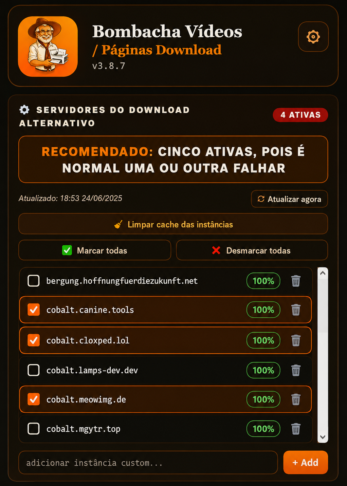

← Voltar para Bombacha Ferramentas
Extensão para navegador
Bombacha Vídeos Download
Extensão para baixar vídeos e páginas com mais praticidade direto no navegador. A experiência atual funciona melhor no Firefox.

Resumo
Baixe vídeos diretamente pelo navegador de forma simples e rápida.
A extensão Bombacha Vídeos Download ajuda a identificar conteúdos de vídeo disponíveis em páginas da internet, facilitando o acesso ao download sem precisar sair do navegador.
Ao encontrar um vídeo compatível, a extensão permite iniciar o download com poucos cliques, tornando o processo mais prático para salvar conteúdos permitidos pelo site.
O que ela faz
- Download de vídeos diretamente pelo navegador.
- Identificação de vídeos e páginas compatíveis para download.
- Painel com servidores alternativos de download.
- Processo simples com poucos cliques.
- Acesso rápido pelo botão da extensão.
- Compatível com Firefox e Chrome.
- Interface leve e fácil de usar.
Melhor no Firefox
A versão atual funciona melhor no Firefox, por isso ele aparece como a opção principal nesta página. Se você quiser a experiência mais completa e estável, prefira instalar por lá.